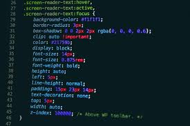

Cloud computing is the delivery of different services through the Internet.
These resources include tools and applications like data storage, servers, databases,
networking, and software
Cloud computing is a popular option for people and businesses for a number of reasons
including cost savings, increased productivity,
speed and efficiency, performance,
and security.
Cloud computing can be both public and private. Public cloud services provide their services over the Internet for a fee. Private cloud services, on the other hand, only
provide services to a
certain number of people. These services are a system of networks
that supply hosted services. There is also a hybrid option, which combines elements of both the public and private services.
Regardless of the kind of service, cloud computing services provide users with
a series of functions including:
Businesses can employ cloud computing in different ways. Some users maintain all apps and data on the cloud, while others use a hybrid model, keeping certain apps
and data on private servers and others on the cloud.
Web development refers in general to the tasks associated with developing websites for hosting via
intranet or internet. The web development process includes web design,
web content development,
client-side/server-side scripting and network security configuration, among other tasks.
In a broader sense, web development encompasses all the actions, updates, and operations required to
build, maintain and manage a website to ensure its performance, user experience, and speed are optimal.
It might also, but not necessarily, include all those strategic actions needed to ensure its proper ranking
on search engine results. Usually, those tasks pertain to a different specialization, namely search engine optimization (SEO)
Web development is the coding or programming that enables website functionality, per the owner's requirements. It mainly deals with the non-design aspect of building websites, which includes coding and writing markup. Web development ranges from creating plain text pages to complex web-based applications, social network applications and electronic business applications.
Most web devs use Hypertext Markup Language (HTML), Cascading Style Sheets (CSS), and JavaScript to develop websites.
HTML: defines the basic framework of a website – the foundation upon which everything else is built upon. It forms the blocks that define a page’s layout, format, and critical components. Although it is theoretically possible to code a website on HTML only, it will be just a barebone site with no functions unless it’s enriched with CSS and JavaScript. Also, even simple style modifications such as changing the color of a button require a lot of coding to be executed using HTML only.
CSS: is used to style the content of a website using a small set of files that are kept across the entire site. This way, whenever a change must be applied to say, consistently change the color of all the buttons found in every page of the website, a web dev needs to edit only a single file in CSS.
JavaScript: programming language is used to take care of the interactivity of many unique website elements. It can be used to create effects that alter the appearance of icons and drop-down menus, add animations, games, and other interactive elements.
Web developers are usually divided into front-end devs, back-end devs, and full-stack devs. A front-end dev takes care of all the visual aspects of the website (layout, navigation bar, etc.), its interactivity, and binds together all its elements
| S.NO | Language | Abbreviation | |
|---|---|---|---|
| 1 | HTML | Hyper Text Markup language | |
| 2 | CSS | Cascading Style Sheets | |
| 3 | JS | JavaScript | |
Back-end devs take care of less visible tasks that ensure the website runs smoothly, such as managing the website’s hosting services, database, and applications. Back-end devs might need to engineer solution to server issues by using additional server-side languages such as Python, Ruby, Java, and PHP.
Full-stack devs are developers able to do both front-end and back-end tasks at the same time.
A laptop is a personal computer that can be easily moved and used in a variety of
locations. Most laptops are designed to have all of the functionality of a desktop
computer, which means
they can generally run the same software and open the same types
of files. However, laptops also tend to be more expensive than comparable desktop computers.
A laptop computer, sometimes
called a notebook computer by manufacturers, is a battery- or
AC-powered personal computer generally smaller than a briefcase that can easily be transported
and conveniently used in temporary
spaces such as on airplanes, in libraries, temporary offices,
and at meetings. A laptop typically weighs less than 5 pounds and is 3 inches or less in thickness.
Among the best-known makers of
laptop computers are IBM, Apple, Compaq, Dell, and Toshiba.
Laptop computers generally cost more than desktop computers with the same capabilities because they are more difficult to design and manufacture. A laptop can effectively be turned into a desktop computer with a docking station, a hardware frame that supplies connections for peripheral input/output devices such as a printer or larger monitor. The less capable port replicator allows you to connect a laptop to a number of peripherals through a single plug. Laptops usually come with displays that use thin-screen technology. The thin film transistor or active matrix screen is brighter and views better at different angles than the STN or dual-scan screen. Laptops use several different approaches for integrating a mouse into the keyboard, including the touch pad, the trackball, and the pointing stick. A serial port also allows a regular mouse to be attached. The PC Card is insertable hardware for adding a modem or network interface card to a laptop. CD-ROM and digital versatile disc drives may be built-in or attachable.
The IBM 5100 is the first portable computer, which was released in September 1975. The computer weighed 55-pounds and had a five-inch CRT display, tape drive, 1.9 MHz PALM processor, and 64 KB of RAM. The picture is an ad of the IBM 5100 taken from a November 1975 issue of Scientific American.
The first truly portable computer or laptop is the Osborne I, which was released in April 1981 and developed by Adam Osborne. The Osborne I weighed 24.5-pounds, had a 5-inch display, 64 KB of memory, two 5 1/4" floppy drives, ran the CP/M 2.2 operating system, included a modem, and cost $1,795.
The first Apple laptop , the Macintosh Portable, was released in September 1989. Due to its size and cost (roughly $6500), it was not very popular. Apple changed its approach to laptop development and, in October 1991, released the PowerBook line of laptops. They released the PowerBook 100, PowerBook 140, and PowerBook 170, which were better received in the computer market.
There are several parts of a laptop, as shown below.
Cyber security is the practice of defending computers, servers, mobile devices, electronic systems, networks, and data from malicious attacks. It's also known as information technology security or electronic information security. The term applies in a variety of contexts, from business to mobile computing, and can be divided into a few common categories
Network security is the practice of securing a computer network from intruders, whether targeted attackers or opportunistic malware.
Application security focuses on keeping software and devices free of threats. A compromised application could provide access to the data its designed to protect. Successful security begins in the design stage, well before a program or device is deployed.
Information security protects the integrity and privacy of data, both in storage and in transit.
Operational security includes the processes and decisions for handling and protecting data assets. The permissions users have when accessing a network and the procedures that determine how and where data may be stored or shared all fall under this umbrella.
Disaster recovery and business continuity define how an organization responds to a cyber-security incident or any other event that causes the loss of operations or data. Disaster recovery policies dictate how the organization restores its operations and information to return to the same operating capacity as before the event. Business continuity is the plan the organization falls back on while trying to operate without certain resources.
1. Cybercrime includes single actors or groups targeting systems for financial gain or to cause disruption.
2. Cyber-attack often involves politically motivated information gathering.
3. Cyber terrorism is intended to undermine electronic systems to cause panic or fear.
Malware:
Malware means malicious software. One of the most common cyber threats, malware is software that a cybercriminal
or hacker has created to disrupt or damage a legitimate user’s computer. Often spread via an unsolicited email attachment
or legitimate-looking download, malware may be used by cybercriminals to make money or in politically motivated cyber-attacks.
. Virus: A self-replicating program that attaches itself to clean file and spreads throughout a computer system, infecting files with malicious code.
· Trojans: A type of malware that is disguised as legitimate software. Cybercriminals trick users into uploading Trojans onto their computer where they cause damage or collect data.
· Spyware: A program that secretly records what a user does, so that cybercriminals can make use of this information. For example, spyware could capture credit card details.
· Ransomware: Malware which locks down a user’s files and data, with the threat of erasing it unless a ransom is paid.
· Adware: Advertising software which can be used to spread malware.
· Botnets: Networks of malware infected computers which cybercriminals use to perform tasks online without the user’s permission.
1: Update your software and operating system: This means you benefit from the latest security patches.
2.Use anti-virus software: Security solutions like Kaspersky Total Security will detect and removes threats.
Keep your software updated for the best level of protection.
3.Use strong passwords:Ensure your passwords are not easily guessable.